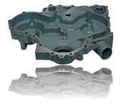
Material :Grey Iron GG 25
Weight : 18 Kgs
Manufacturing process :Sand Casting – Machine moulding process with CNC Machining
Application : Gear Box Housing
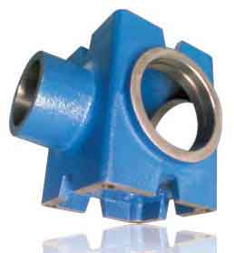
Material : S.G. Iron GGG 40
Weight : 12 Kgs
Manufacturing process : Sand Casting with CNC Machining
Application : Gear Box Housing
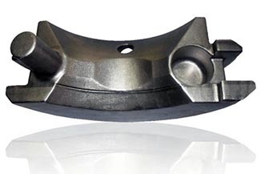
Material : Grey Iron GG 25
Weight : 18 Kgs
Manufacturing process : Sand Casting
Machine moulding process with CNC Machining
Application :Gear Box Housing
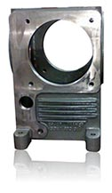
Material : Grey Iron GG 25
Weight : 15 Kgs
Manufacturing process : Sand Casting process with CNC Machining (Geometrical & Dimensional Tolerance 0.02 mm)
Application : Compressor Cranckcase
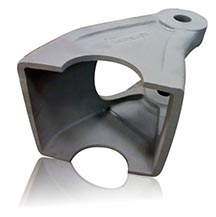
Material :- Alloy Steel G20Mn5
Weight :- 250 Kgs
Application :- Tip Casting for Harbour Crane
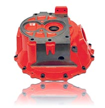
Material : Grey Iron GG 25
Weight : 22 Kgs
Manufacturing process : Sand Casting – Machine moulding process with CNC Machining
Application : Gear Box Housing
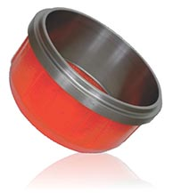
Material : Grey Iron GG 25
Weight : 19 Kgs
Manufacturing process :- Sand Casting – Machine moulding process with CNC Machining
Application : Automotive
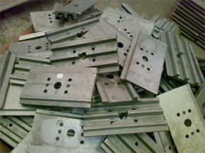
Material : Alloy Steel
Casting Weight : 50 Kgs per piece
Application : Track Pad – Earthmoving / Material Handling
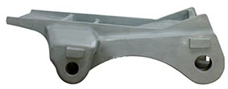
Material : Alloy Steel ( G20Mn5)
Casting Weight : 1150 Kgs per piece
Application : for Harbour Crane
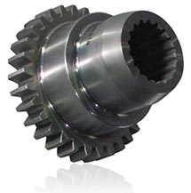
Material : Grey Iron GG 25
Weight :18 Kgs
Manufacturing process : Sand Casting
Machine moulding process with CNC Machining
Application :Gear Box Housing
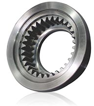
Material : S.G. Iron GGG 40
Weight :12 Kgs
Manufacturing process : Sand Casting with CNC Machining
Application :Gear Box Housing
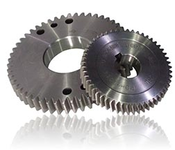
Material : Alloy Steel 42CrMo4
Weight : 6 Kgs & 4 Kgs
Manufacturing process :Steel blank & Gear cutting
Application : Loose Machined Gears